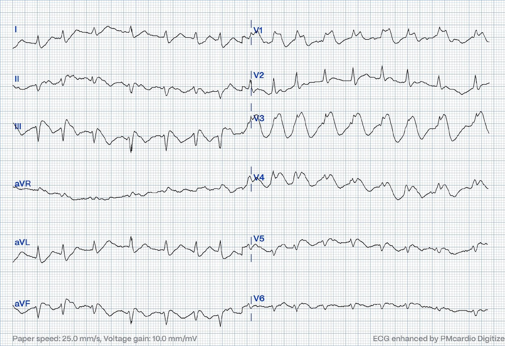
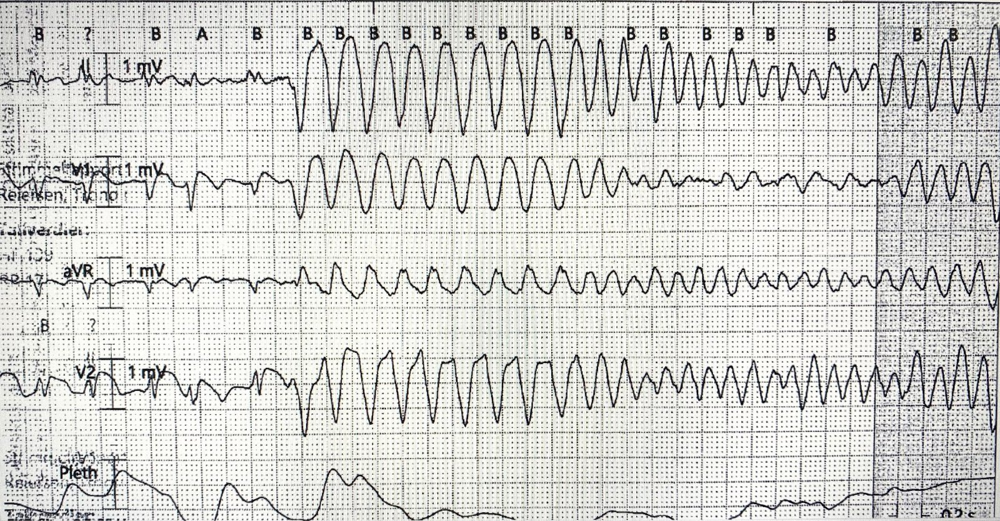
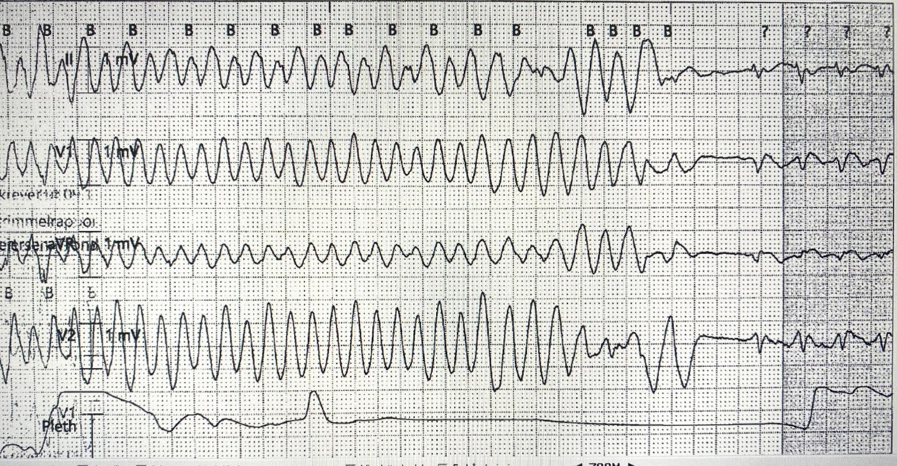
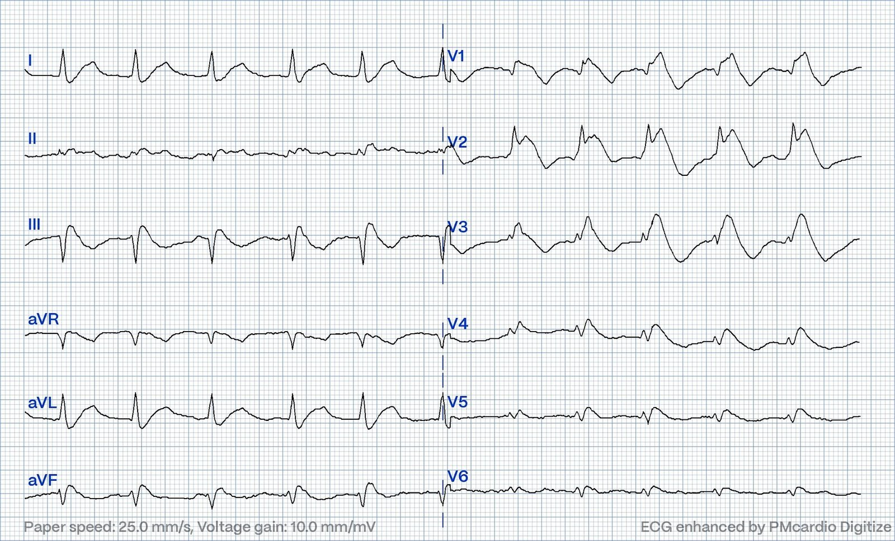
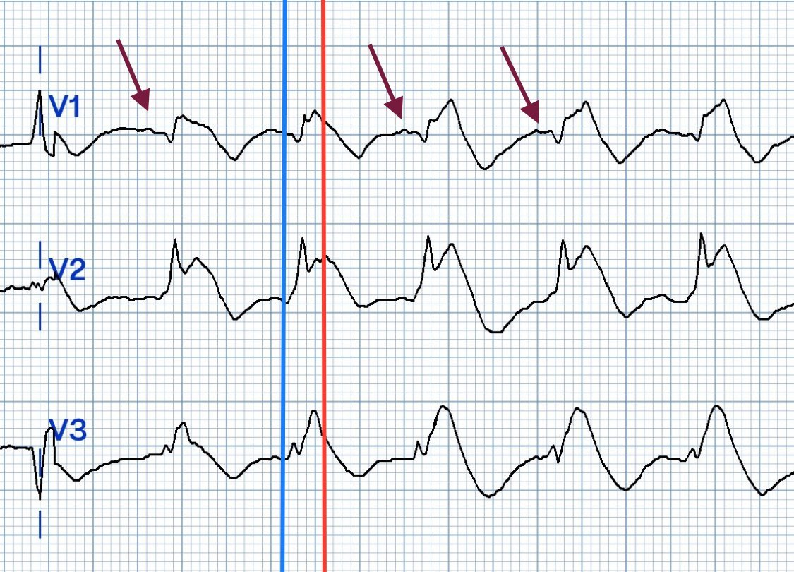
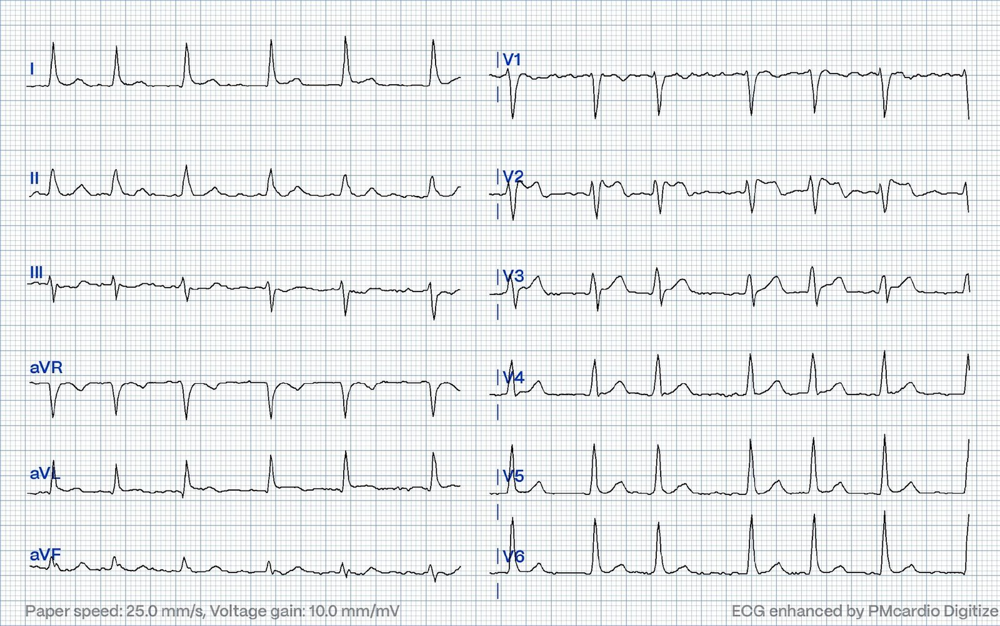
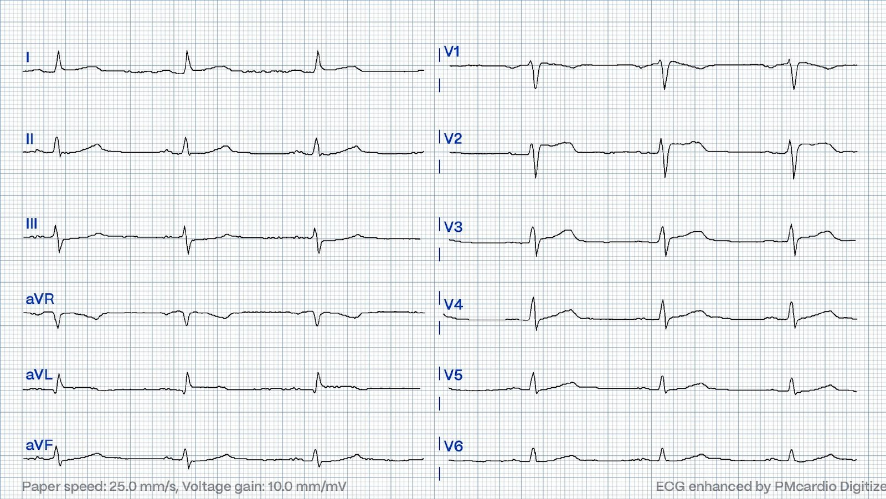
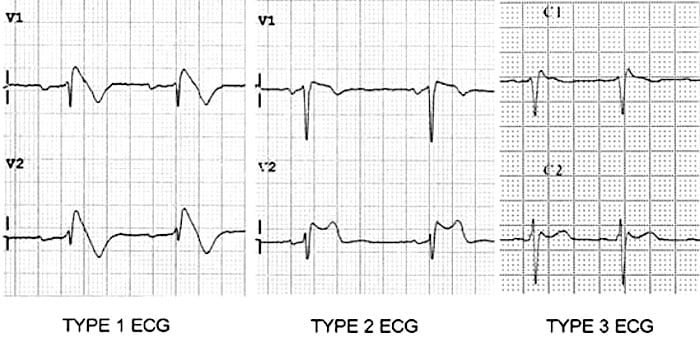
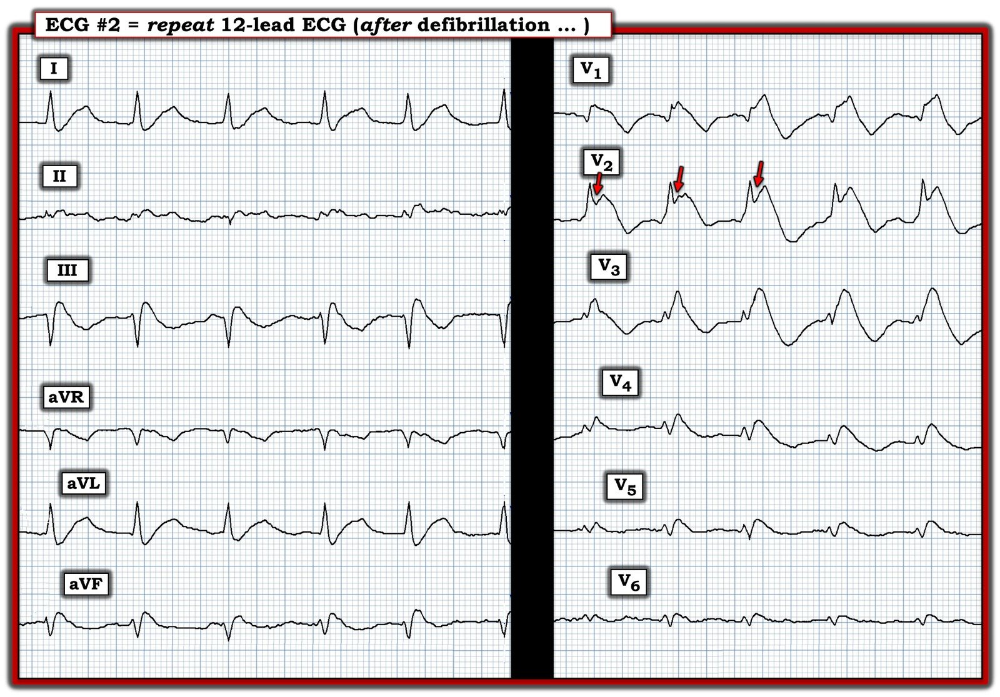

23/08/2024 — Tiền ngất và một phức bộ QRS rộng kỳ dị
Bản dịch tiếng Việt của bài "Pre-syncope and a bizarre wide complex" – Dr. Smith’s ECG Blog. Giữ nguyên toàn bộ 10 hình ảnh của bản gốc.
Bài viết của Magnus Nossen, có chỉnh sửa bởi Grauer.
Điện tâm đồ dưới đây của một bệnh nhân nam ở độ tuổi 70, có tiền sử rung nhĩ (AF). Ông đến khoa cấp cứu của bạn vì khó chịu ở ngực và gần đây có các cơn tiền ngất (presyncope).
Điện tâm đồ này có những dấu hiệu phù hợp với nhồi máu cơ tim do tắc (OMI) không? Nếu không — Điều gì khác có thể đang xảy ra?
Điện tâm đồ #1


Ngay sau khi ghi điện tâm đồ trên, bệnh nhân bị ngừng tim. Hồi sinh tim phổi (CPR) được tiến hành — và bệnh nhân tỉnh lại trong lúc đang hồi sức, trước khi kịp khử rung. Dưới đây là hai bản in từ monitor tim cho thấy lúc khởi phát và lúc kết thúc của rối loạn nhịp thất gây ngừng tim.
Khởi phát nhịp nhanh thất đa dạng


Nhịp nhanh thất đa dạng tự kết thúc


Các bản in từ monitor tim ở trên cho thấy hai dải nhịp 4 chuyển đạo ghi đồng thời. Chuyển đạo thứ hai từ trên xuống là chuyển đạo V1. Lưu ý hình thái QRS dạng RBBB bất thường ở chuyển đạo V1 này, cả trước và sau cơn nhịp nhanh thất đa dạng (PMVT).
Bệnh nhân lại ngừng tim lần nữa. Ông được khử rung nhanh chóng — và tỉnh lại ngay sau đó, lúc này điện tâm đồ #2 (dưới đây) được ghi.
Điện tâm đồ #2


Diễn giải điện tâm đồ: Cả điện tâm đồ #1 và điện tâm đồ #2, cũng như các dải nhịp, đều cho thấy phức bộ QRS trông kỳ dị. Có hình thái QRS giống RBBB ở các chuyển đạo trước tim bên phải. QRS rất rộng — ít nhất 180 ms ( = thời gian kéo dài 4,5 ô nhỏ). Có ST chênh lên đáng kể (rõ nhất ở các chuyển đạo bên phải) — kèm sóng T đảo ngược ở các chuyển đạo bị ảnh hưởng.
- ST chênh lên không điển hình cho thiếu máu cục bộ. Thay vào đó — điện tâm đồ phù hợp với hình thái Brugada. (Hình thái Brugada có thể do nhiều tình trạng khác nhau gây ra, trong đó hội chứng Brugada là được biết đến nhiều nhất.).
Hình dưới đây phóng to các chuyển đạo V1-V3 của điện tâm đồ #2. Các mũi tên nâu chỉ vào sóng P xoang. Đường xanh thẳng đứng đánh dấu điểm bắt đầu QRS, còn đường đỏ đánh dấu điểm kết thúc QRS và bắt đầu đoạn ST.


Ca bệnh tiếp diễn: Bệnh nhân này đang điều trị flecainide (50 mg hai lần mỗi ngày) để kiểm soát nhịp trong rung nhĩ (AF). Khi có cơn AF “đột phá” — ông sẽ uống thêm 100 mg flecainide. Nếu cách này không chuyển được AF về nhịp xoang — bệnh nhân được dặn đến khoa A&E (Tai nạn và Cấp cứu) để sốc điện chuyển nhịp.
- Vào ngày nhập viện — bệnh nhân đã uống thêm một viên flecainide 100 mg vì cơn AF “đột phá”.
- Không may — flecainide đã làm khởi phát hình ảnh Brugada trên điện tâm đồ, rồi chuyển thành một loạt cơn PMVT (nhịp nhanh thất đa dạng), phải hồi sức, bao gồm khử rung nhiều lần.
Nồng độ kali và magnesi huyết thanh bình thường.
- Điều trị tiếp theo gồm nhiều liều magnesi sulfat tĩnh mạch trong 24 giờ đầu sau nhập viện. Ngoài ra, bệnh nhân được đệm bằng natri bicarbonat nhằm trung hòa tác dụng chẹn kênh natri của flecainide.
Bệnh nhân tiếp tục có vài cơn PMVT ngắn, tự hết.
- Đã quyết định an thần và đặt nội khí quản cho bệnh nhân. Nếu cần khử rung thêm nhiều lần nữa — thực hiện việc này sẽ an toàn và dễ dàng hơn khi bệnh nhân đã được đặt nội khí quản và an thần.
Điện tâm đồ #3 (dưới đây) được ghi vào ngày nằm viện thứ 2. Lúc này, bệnh nhân đã được rút nội khí quản và ổn định nhiều giờ, không còn VT.
Điện tâm đồ #3


Trong suốt thời gian nằm viện — troponin không tăng đáng kể. Thông tim bình thường. Không ghi nhận thêm cơn VT nào.
- Bệnh nhân được chẩn đoán hội chứng Brugada và được đặt ICD.
- Xét nghiệm gen âm tính (Chỉ 20-30% bệnh nhân đáp ứng tiêu chuẩn chẩn đoán hội chứng Brugada có xét nghiệm gen dương tính). Tuy nhiên, có tiền sử gia đình đột tử do tim (SCD).
- Đã ngừng flecainide — sau đó thỉnh thoảng thấy hình ảnh Brugada típ 2 trên điện tâm đồ, nhưng không tái xuất hiện hình ảnh Brugada típ 1.
Điện tâm đồ #4 (dưới đây) được ghi trong lúc theo dõi.


Hội chứng Brugada (BrS) được mô tả lần đầu năm 1992. Khởi đầu chỉ là một điều lạ trên điện tâm đồ, về sau hội chứng này được quan tâm nhiều vì làm tăng nguy cơ đột tử ở những người trẻ và ngoài ra khỏe mạnh. Hội chứng này là chủ đề được quan tâm lớn trong cả nghiên cứu lâm sàng lẫn nghiên cứu cơ bản.
Hội chứng Brugada là một rối loạn di truyền gây loạn nhịp (bệnh kênh ion), với các thay đổi đặc trưng trên điện tâm đồ dưới dạng ST chênh lên ở các chuyển đạo trước tim bên phải (V1 – V3), và tăng nguy cơ PMVT và rung thất (VFib).
- Di truyền trội trên nhiễm sắc thể thường.
- Đến nay, đột biến được phát hiện ở 20-30% bệnh nhân BrS.
Đã có mô tả một danh sách dài các yếu tố có thể gây hình ảnh Brugada trên điện tâm đồ, bao gồm một số thuốc điều trị, rối loạn điện giải và nhiều chất khác nhau.
- Các thuốc được cho là có liên quan gồm thuốc chống loạn nhịp (ví dụ, flecainide, verapamil và propranolol) — thuốc chống trầm cảm (ví dụ, amitryptiline) — và các thuốc làm tăng trương lực phế vị như acetylcholine.
- Hình ảnh Brugada trên điện tâm đồ cũng có thể gặp sau khi dùng cocaine hoặc rượu.
- LƯU Ý: Các thay đổi điện tâm đồ trong hội chứng Brugada có thể thay đổi động. Nhiều bệnh nhân lúc thì có điện tâm đồ bình thường — rồi tự phát chuyển sang hình ảnh Brugada một cách không thể đoán trước.
- Có thể gặp 3 típ hình ảnh Brugada trên điện tâm đồ (Xem hình dưới đây). Đôi khi cả 3 típ Brugada này có thể thấy trên cùng một bản ghi.
Các típ hình ảnh Brugada trên điện tâm đồ


(Hình trên được sao lại từ LITFL -2022 )
- Điện tâm đồ típ 1: ST chênh lên dạng vòm (coved) ≥2 mm, nối tiếp với sóng T đảo ngược ở chuyển đạo V1 và/hoặc V2.
- Điện tâm đồ típ 2: ST chênh lên hình yên ngựa (saddleback) với điểm J chênh lên ≥2 mm ở chuyển đạo V1 và/hoặc V2
- Điện tâm đồ típ 3: Tương tự tiêu chuẩn típ 2 nhưng phần cuối đoạn ST chênh lên <1 mm
============================================
Về CA BỆNH hôm nay:
Bệnh nhân trong ca hôm nay được chẩn đoán hội chứng Brugada (BrS) dựa trên tiền sử gia đình có SCD, hình ảnh Brugada típ 1 trên điện tâm đồ (sau khi dùng flecainide) — và PMVT được ghi nhận chuyển thành rung thất. Bệnh nhân đã được đặt ICD (máy khử rung tim cấy được).
Một thực thể lâm sàng khác gọi là kiểu hình sao chép Brugada (Brugada Phenocopy, BrP) tạo ra các hình ảnh điện tâm đồ không thể phân biệt với hội chứng Brugada. Việc phân biệt giữa BrS và BrP đôi khi rất khó, nhất là vì hình ảnh điện tâm đồ điển hình trong BrS có thể chỉ xuất hiện từng lúc — và xét nghiệm gen trong BrS ở phần lớn trường hợp không tìm thấy đột biến gen gây bệnh nào.
Ví dụ; Một bệnh nhân có BrS thật có thể có điện tâm đồ nền bình thường rồi xuất hiện thay đổi Brugada típ 1 do sốt khởi phát. Ngược lại, một bệnh nhân không có hội chứng Brugada thật có thể, khi sốt, có hình ảnh Brugada típ 1 trên điện tâm đồ và hình ảnh này biến mất khi hết sốt — trường hợp này được xếp là BrP. Xét nghiệm gen của cả hai bệnh nhân này đều có thể bình thường. Trừ khi có thêm thông tin như ghi nhận rối loạn nhịp thất điển hình liên quan đến BrS; ngất; hoặc tiền sử gia đình có SCD — thì hai bệnh nhân này thực sự không thể phân biệt được.
Có hình ảnh Brugada típ 1 tự phát trên điện tâm đồ là chỉ định để thăm dò thêm và chuyển khám chuyên khoa. Có hình ảnh Brugada típ 1 trong bối cảnh có yếu tố khởi phát khả dĩ cũng cần được thăm dò thêm. Chuyển đến bác sĩ tim mạch chuyên về thăm dò và điều trị bệnh nhân mắc bệnh kênh ion có lẽ là cần thiết trong các trường hợp mơ hồ (equivocal), khi khó phân biệt giữa BrS và BrP. Có thể cân nhắc nghiệm pháp kích thích bằng thuốc chẹn kênh natri như một phần của thăm dò chẩn đoán, và thăm dò điện sinh lý nên là một phần của phân tầng nguy cơ.
Thêm các ca liên quan trên blog này:
Kiểu hình sao chép Brugada và cocaine
Cardiac arrest, severe acidosis, and a bizarre ECG (Ngừng tim, toan máu nặng và một điện tâm đồ kỳ dị)
A Patient with Cocaine Chest Pain and Prehospital Computer interpretation of ***STEMI*** (Bệnh nhân đau ngực do cocaine và kết quả đọc bằng máy tính trước viện là ***STEMI***)
Rắc rối với flecainide
Wide-complex tachycardia: VT, aberrant, or “other?” (Nhịp nhanh QRS rộng: VT, dẫn truyền lệch hướng hay “nguyên nhân khác?”)
A young woman with palpitations. What med is she on? With what medication is she non-compliant? What management? (Một phụ nữ trẻ bị hồi hộp đánh trống ngực. Cô ấy đang dùng thuốc gì? Cô ấy không tuân thủ thuốc nào? Xử trí thế nào?)
An elderly patient with syncope, dyspnea, and weakness, but no Chest Pain, and mild hyperkalemia (Một bệnh nhân cao tuổi bị ngất, khó thở và mệt yếu nhưng không đau ngực, kèm tăng kali máu nhẹ)
Right Bundle Branch Block with New Anterior ST elevation (Blốc nhánh phải kèm ST chênh lên mới ở thành trước)
Ở đây, ngộ độc flecainide trong bối cảnh nhịp tạo nhịp thất giả tăng kali máu: Weakness and Dyspnea with a Sine Wave. It’s not what you think! (Mệt yếu và khó thở với sóng hình sin. Không phải như bạn nghĩ đâu!)
Xin xem ca năm 2022 này của bác sĩ Meyers để thảo luận về kiểu hình sao chép Brugada.
============================================
Những điểm cần học:
- Bệnh nhân hội chứng Brugada có thể có điện tâm đồ bình thường. Các thay đổi điện tâm đồ đặc trưng có thể chỉ xuất hiện từng lúc, hoặc sau một yếu tố gây stress khởi phát.
- Luôn ghi điện tâm đồ theo dõi sau khi kê đơn hoặc tăng liều thuốc chống loạn nhịp nhóm 1a, vì việc này có thể làm lộ hình ảnh Brugada trên điện tâm đồ.
- Phân biệt BrS với BrP là một thách thức lâm sàng — khiến khó xác định bệnh nhân nào cần đặt ICD.
Tài liệu tham khảo:
- Brugada syndrome: A comprehensive review of pathophysiological mechanisms and risk stratification strategies (Ka Hou Christien Li, Sharen Lee, Chengye Yin và cs. — Tạp chí IJC Heart & Vasc, 2020)
- Brugada Syndrome • LITFL • ECG Library Diagnosis (J. Larkin và M. Cadogan — Life In The Fast Lane, 2022)
- Brugada phenocopy: A new electrocardiogram phenomenon (Daniel D. Anselm, Jennifer M. Evans, Adrian Baranchuk — Tạp chí World J Cardiol, 2014)
- Brugada phenocopy vs. Brugada syndrome (Galih J. Adytia, Henry Sutanto — Tạp chí Current Problems in Card, 2024)
- Provocation testing to unmask channelopathies (Manoj N. Obeyesekere, George J. Klein và cs. — Tạp chí Circulation: Arrhythm & Electrophys, 2011)
- Implantable loop recorders in patients with Brugada syndrome: the BruLoop study (Bergonti và cs. — Tạp chí Eur Heart J, 2024)

===================================
BÌNH LUẬN CỦA TÔI, bởi KEN GRAUER, MD (23/8/2024):
===================================
Tôi thấy ca hôm nay của bác sĩ Nossen đặc biệt thú vị — xét sự kết hợp các đặc điểm lâm sàng, gồm tiền sử các cơn tiền ngất — rồi ngừng tim do PMVT (nhịp nhanh thất đa dạng — PolyMorphic VT) chuyển thành rung thất ngay sau khi đến ED (khoa cấp cứu — Emergency Department) — ngừng tim được cho là do Flecainide quá liều khởi phát — và các điện tâm đồ ban đầu có QRS giãn rộng rõ rệt, hình ảnh RBBB và một hình ảnh giả STEMI đáng lo ngại — với kết luận cuối cùng là bệnh nhân bị hội chứng Brugada, dẫn đến đặt ICD trước khi xuất viện.
- Để minh họa, trong Hình 1 — tôi đã sao lại điện tâm đồ ghi lại, thu được sau khi khử rung.


SUY NGHĨ CỦA TÔI Liên quan đến CA BỆNH Hôm nay:
Tôi không chắc nên diễn giải 2 điện tâm đồ ban đầu trong ca hôm nay như thế nào. Cả hai bản ghi đều có nhiễu đường nền đáng kể (nhất là ở chuyển đạo II) — khiến khó xác định hoạt động nhĩ. Tôi đồng ý với bác sĩ Nossen rằng nhịp nền có vẻ là nhịp xoang — dù khó khẳng định điều này do khoảng R-R thay đổi và hoạt động nhĩ không chắc chắn.
Tôi tập trung vào điện tâm đồ #2, thu được sau khi khử rung thành công (Hình 1):
- Dù phức bộ QRS trong Hình 1 trông rộng — nhịp có vẻ là nhịp trên thất. QRS ở điện tâm đồ #2 rộng bao nhiêu thì khó nói — do có khía rõ mà ta thấy ở chuyển đạo V2 (mũi tên ĐỎ) — và ranh giới QRS khó xác định ở nhiều chuyển đạo.
- Tôi nghĩ có một dạng dẫn truyền RBBB nào đó (do QRS giãn rộng với sóng R ưu thế ở V1,V2 — và sóng S tận rộng ở các chuyển đạo bên I và aVL).
- Hình dạng đoạn ST chênh lên rõ rệt ở chuyển đạo V1, với đoạn ST đi xuống chậm vào sóng T đảo ngược sâu ở phần cuối, gợi ý mạnh hình ảnh Brugada típ 1 trên điện tâm đồ ở chuyển đạo này.
- Mặt khác — khía ở chuyển đạo V2 dường như xảy ra ở điểm J (mũi tên ĐỎ) — cùng ST chênh lên kiểu vây cá mập ở chuyển đạo này, trông giống STEMI cấp hơn ở bệnh nhân lớn tuổi đến khám vì khó chịu ở ngực này.
- Tuy vậy, biên độ QRST giảm và hình dạng sóng ST-T bất thường ở các chuyển đạo trước tim bên V4,V5,V6 — trông giống phần tiếp nối của hình ảnh Brugada hơn là STEMI cấp.
- Và, bệnh nhân này đang dùng Flecainide — và có vẻ ông đã uống một số liều “thêm” của thuốc này.
NHẬN ĐỊNH CỦA TÔI về điện tâm đồ #2:
Tôi nghĩ có sự kết hợp của nhiều yếu tố đang tác động.
- Kali huyết thanh bình thường — nên tăng kali máu không phải là một yếu tố.
- Tun và cs. (EP Lab Digest 11(6), 2011) — và Aizawa và cs. (Circulation 128(10):1048-1054, 2013) — đã chỉ ra rằng phức bộ QRS ở các chuyển đạo trước có hình ảnh Brugada típ 1 có thể có RBBB hoàn toàn hoặc không hoàn toàn và/hoặc không có BBB. Và khi có RBBB hoàn toàn — nó có thể che lấp hình ảnh Brugada típ 1 (và có lẽ ngược lại) — điều này có thể giải thích phần nào khó khăn của tôi khi phân biệt giữa đâu là hình ảnh Brugada típ 1, đâu là dẫn truyền RBBB, và đâu là khả năng STEMI thành trước cấp.
- Thêm vào những điều trên — là khả năng Flecainide quá liều. Như tôi đã điểm lại trong Bình luận của tôi ở bài ngày 21 tháng Năm năm 2023 trên Dr. Smith’s ECG Blog — Flecainide quá liều có thể gây QRS giãn rộng rõ rệt với hình thái kỳ dị. Các tác dụng sinh lý bất lợi khác của Flecainide quá liều có thể gồm: i) Kéo dài mọi khoảng (PR-QRS-QTc); ii) Giảm co bóp cơ tim, dẫn đến hạ huyết áp; iii) Ức chế mọi đường dẫn truyền chính (ở nút AV; hệ His-Purkinje; và ở tâm thất — dẫn đến suy giảm tính tự động); và, iv) Dễ xảy ra rối loạn nhịp gây tử vong (VT/VFib; vô tâm thu). Không rõ bệnh nhân trong ca hôm nay đã uống lượng Flecainide “thêm” đủ để gây ra một phần hay toàn bộ các tác dụng này hay chưa.
- LƯU Ý: Theo thông tin diễn tiến từ bác sĩ Nossen — đánh giá sau đó đã loại trừ nhồi máu cấp. Như vậy, các yếu tố giải thích cho “bức tranh” ở điện tâm đồ #2 là tác động kết hợp của dẫn truyền kiểu RBBB — hội chứng Brugada — khả năng có “hiệu ứng trí nhớ” (do VT/VFib và khử rung) — và Flecainide quá liều.
NHỮNG ĐIỂM CẦN HỌC Cuối cùng:
- Phổ hình ảnh Brugada trên điện tâm đồ tiếp tục mở rộng. Nhiều yếu tố có thể giải thích sự đa dạng của các hình ảnh Brugada này — bao gồm có hay không có dẫn truyền RBBB — khả năng có nhồi máu kèm theo — các yếu tố có thể khởi phát Brugada (như Flecainide trong ca hôm nay) — và thời điểm ghi điện tâm đồ, do bản chất thay đổi động của hình ảnh Brugada.
- Ca hôm nay khác với phần lớn các bệnh nhân có hình ảnh Brugada trên điện tâm đồ mà chúng tôi đã trình bày trên Dr. Smith’s ECG Blog — ở chỗ dù việc dùng Flecainide có thể đã gây tác động gì đi nữa, bệnh nhân hôm nay được chẩn đoán hội chứng Brugada, dẫn đến đặt ICD trước khi xuất viện.
- Ngược lại — Phần lớn bệnh nhân có hình ảnh Brugada trên ECG Blog này là kiểu hình sao chép Brugada (Xem Bình luận của tôi ở cuối trang trong bài ngày 5 tháng Năm năm 2022 — bài ngày 25 tháng Mười Một năm 2022 — và bài ngày 22 tháng Bảy năm 2023, cùng các ca kiểu hình sao chép Brugada khác). “Tin tốt” về kiểu hình sao chép Brugada — là điều chỉnh tình trạng nền có thể làm mất hình ảnh Brugada típ 1 trên điện tâm đồ (với tiên lượng tốt hơn nhiều so với bệnh nhân hội chứng Brugada thật).
- Các tình trạng khác ngoài hội chứng Brugada có thể tạo ra hình ảnh Brugada típ 1 trên điện tâm đồ gồm (cùng nhiều tình trạng khác) — bệnh lý cấp tính có sốt — thay đổi trương lực thần kinh tự chủ (như có thể xảy ra khi ngất) — hạ thân nhiệt — thiếu máu cục bộ hoặc nhồi máu — ngừng tim — rối loạn điện giải (nhất là tăng kali máu — nhưng cũng có thể là hạ kali máu/hạ natri máu) — và nhiều loại thuốc.
- 2 yếu tố khởi phát thường gặp nhất của kiểu hình sao chép Brugada mà chúng tôi gặp trên Dr. Smith’s ECG Blog là: i) Bệnh lý cấp tính có sốt; và, ii) Tăng kali máu.
- Cuối cùng — Bệnh nhân có hình ảnh Brugada trên điện tâm đồ thường sẽ được chuyển từ ED để đánh giá thêm. Chắc chắn phải chuyển những bệnh nhân này NẾU có triệu chứng đáng lo ngại đi kèm hình ảnh điện tâm đồ bất thường (tức là, nếu bệnh nhân từng ngất-tiền ngất và/hoặc có rối loạn nhịp ác tính) và/hoặc nếu có tiền sử gia đình dương tính với đột tử hoặc rối loạn nhịp ác tính. Những bệnh nhân này rõ ràng có nguy cơ cao hơn và cần được thăm dò chuyên sâu bởi các bác sĩ có kinh nghiệm về những điểm phức tạp của hội chứng Brugada (và về việc có nên khuyến cáo đặt ICD hay không).
- Dù vậy — Dữ liệu gần đây cho thấy khi không có tiền sử gia đình dương tính và không có triệu chứng đáng lo ngại — việc xuất hiện hình ảnh Brugada típ 1 trên điện tâm đồ chỉ khi làm nghiệm pháp kích thích bằng thuốc đi kèm tỷ lệ biến cố rất thấp và tiên lượng dài hạn tốt hơn nhiều so với bệnh nhân có hình ảnh Brugada típ 1 tự phát (Gaita và cs. — Circulation 148(20): 1543-1555, 2023 — Wilde và Saenen — Bài xã luận: Circulation 148(20): 1556-1558, 2023 — Krahn và cs. — JACC 8(3):386-405, 2022 — Sayed và cs. — StatPearls, 2023).